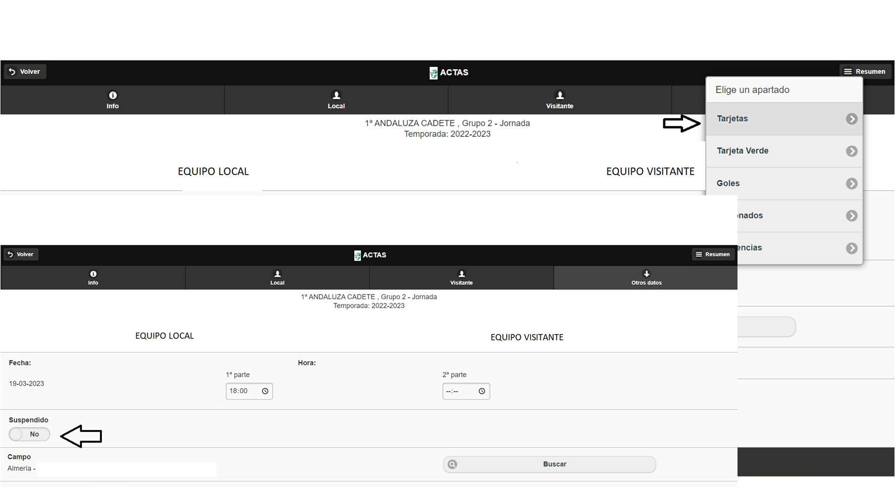

Árbitros Almería
Real Federación Andaluza de Fútbol
PARTIDO SUSPENDIDO POR INCOMPARECENCIA DE UNO DE LOS DOS EQUIPOS
Cuando nos encontremos en un partido y uno de los dos equipos no se presente a las
instalaciones antes de la hora fijada y no haya noticias de ningún tipo respecto a su
presencia en el encuentro o no, debemos esperar 30 minutos desde la hora inicial fijada
en caso de que no haya ningún partido en el mismo terreno de juego después del
nuestro o 10 minutos en caso de que haya partido después del nuestro o el partido se
juegue por la tarde y no haya iluminación autorizada (focos).
En caso de que uno de los dos equipos no se presente deberemos marcar en el acta la
opción de partido suspendido (primera página de todas conforme se abre el acta), sin
comenzar, y reflejar en el motivo de la suspensión en el apartado de incidencias lo
siguiente:
Estando en las instalaciones con una hora de antelación previa al inicio del encuentro,
el club local/visitante, el XXX XXX, no se encuentra en las instalaciones a la hora fijada
de disputa del partido. Tras agotar todos los medios a mi alcance y sin tener noticia
alguna respecto al equipo local/visitante, me veo en la obligación de suspender el
6
encuentro antes de su comienzo por la incomparecencia de dicho club.

Siempre que tengamos noticias de que el retraso de ese equipo es justificado (se rompe
el autobús, uno de los jugadores se ha mareado y han tenido que parar a “socorrer” a
esta persona…) debemos agotar todos los medios a nuestro alcance y, en caso de que
lleguen pasados esos 30 o 10 minutos, según lo descrito anteriormente, se permitirá que
el partido se dispute.